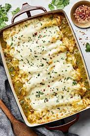

Green Chicken Enchiladas

Green Chicken Enchiladas; melty mozzarella and jack cheese,
taco-seasoned shredded chicken, sour cream and corn tortillas, all
slathered in mildly tangy green enchilada sauce.
Ingredients (serves 6)
- 4 cups cooked, shredded chicken
- 2 tbsp taco seasoning
- 3 cups mozzarella, shredded
- 3 cups monterey jack, shredded
- 1 cup sour cream
- 10 corn tortillas
- 1 (28 oz) can green enchilada sauce
Steps
- Season some shredded chicken—if you’re like us and usually have some cooked
chicken in the fridge, use that! If not, you can use the meat from a
store-bought rotisserie chicken.
- Toss the chicken with shredded Monterey Jack cheese and mozzarella—these
mild, milky cheeses melt like no other, and meld beautifully with this
enchilada recipe’s sour cream-based filling.
- Warm the tortillas and give them a dip in some green enchilada sauce
(from a can—this recipe is all about ease) before you fill and bake them.
- Fill, roll and arrange the tortillas in a 9x13 inch baking dish. Pour green
enchilada sauce over the whole gorgeous mess, top with a little more cheese,
and bake until bubbly. Since the chicken is cooked, all the bake needs to do
is help the whole thing cohere—once the cheese is really melted and
bubbling.
- Enjoy!